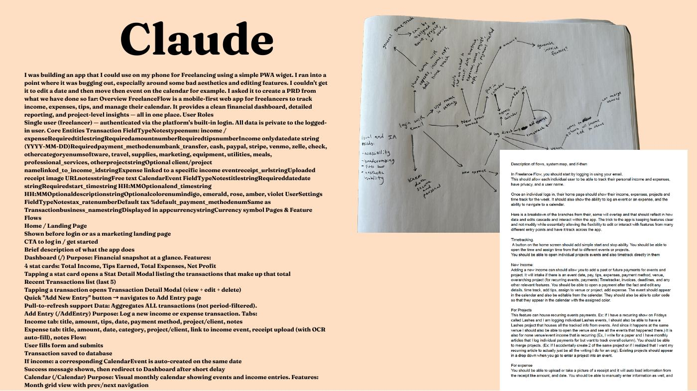
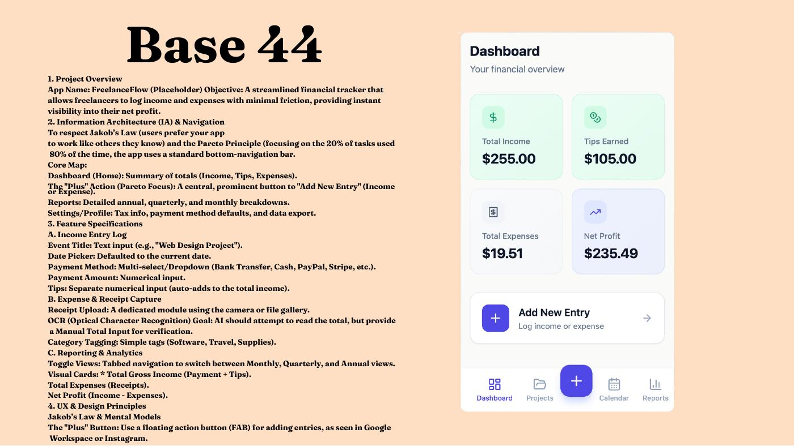

← All projects · Project 03
Freelance Flow.
A mobile-first PWA for solo freelancers who need to track income, tips, expenses, projects, and schedule in one place — without the overhead of small-business accounting software.

Bookkeeping friction eats freelancer money.
Solo freelancers lose money to bookkeeping friction — tips logged in one app, expenses screenshotted in another, projects tracked in a notes app. Existing tools are built for small businesses, not for one person trying to log a tip between gigs.
One mobile-first home for the money math.
Freelance Flow is a mobile-first progressive web app for solo freelancers who need to track income, tips, expenses, projects, and schedule in one place — without the overhead of small-business accounting software.
The app combines a tappable Dashboard (financial snapshot), one-tap entry logging with smart receipt capture, project-level time and budget tracking, and a Reports page that aggregates net profit, with the critical rule that total income always equals amount + tips.
Who it's for.
- Solo freelancers — drag performers, designers, photographers, stylists, gig workers — who get paid in mixed channels (Venmo, cash, app payouts) and currently track income across notes apps, screenshots, and memory.
- Users who want their finances private, fast to log, and visible at a glance, not buried inside a desktop accounting tool.
- Mobile-primary users who expect bottom-sheet modals, pull-to-refresh, and safe-area-inset padding on notched phones.
Insight
Through interviews with freelancing friends, the consistent pain point wasn't math — it was friction. People stop logging income when it takes more than two taps. So I designed every primary action to live one tap away from the Dashboard, with a floating Add Entry button between Projects and Calendar in the bottom nav.
the income-plus-tips rule. Freelancers think of tips as separate, but for taxes and
reporting they have to be combined. Making
total income = amount + tips a global calculation rule (used identically in
every aggregation) eliminated an entire category of bookkeeping errors before they could
start.
System map & system thinking.


Color palette
Indigo = primary. Emerald = income / positive. Slate = expense / neutral. Rose = danger.
Tokens from the live index.css design system.
Typography & components
Font: system sans-serif. Page titles text-2xl md:text-3xl bold slate-900;
sections text-lg semibold; body text-slate-600.
Cards: bg-white, rounded-2xl, slate-100 border, shadow-sm.
Buttons: rounded-xl indigo primary, slate outline secondary. Inputs
h-12 rounded-xl. Modals: bottom sheet on mobile
(rounded-t-3xl), centered card on desktop. Animations via Framer Motion
fade + rise.
Outcomes
- Income + tips global rule eliminated split-tracking errors before they could start.
- ID-based modal selection (not object-in-state) means every modal shows live, post-edit data.
- Pull-to-refresh on Dashboard and Reports — pages stay in sync via a single
['transactions']query cache key.
Remove the friction between earning and tracking.
A six-destination bottom nav (Dashboard · Projects · Add Entry · Calendar · Reports · Settings) with a consistent query cache, ID-based selection so modals always show post-edit data, and a design system tuned for solo operators — warm off-white background, indigo primary, emerald for income, slate for expense, rose for danger.
The result is a tool a freelancer can open between gigs, log income or a receipt in under five seconds, and trust to surface accurate weekly totals on the Dashboard and Reports pages.
View full presentation (PDF) ↗